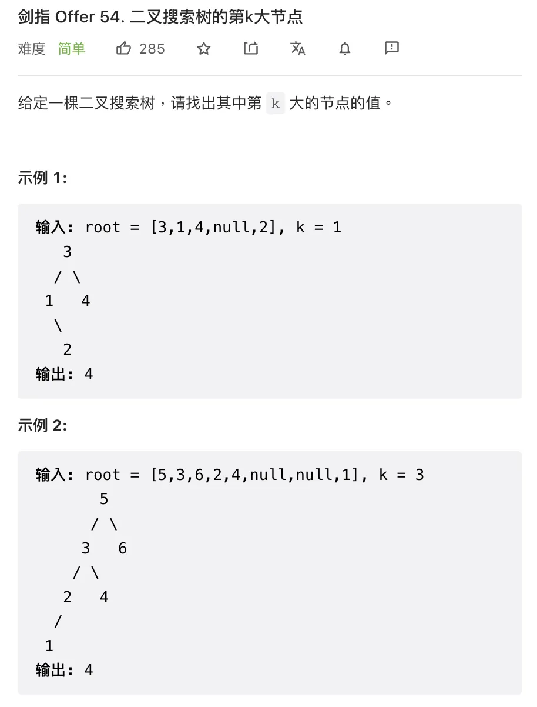
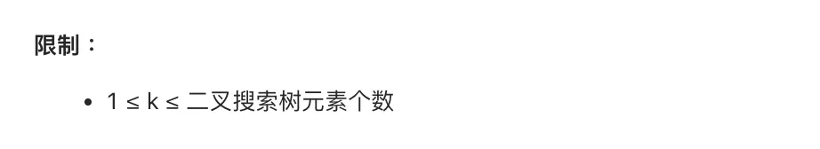

剑指 Offer 54. 二叉搜索树的第k大节点
Question


✍🏽 My Solution
执行用时：0 ms, 在所有 Java 提交中击败了100.00%的用户
内存消耗：41.3 MB, 在所有 Java 提交中击败了43.73%的用户
class Solution {
int count = 0;
int result;
public int kthLargest(TreeNode root, int k) {
inorder_r(root, k);
return result;
}
private void inorder_r(TreeNode root, int k) {
if (count >= k) return;
if (root == null) return;
inorder_r(root.right, k);
count++;
if (k == count) {
result = root.val;
return;
}
inorder_r(root.left, k);
}
}
🧠 Thought Process
- Why did I choose this particular implementation?
- 看了王爭解法